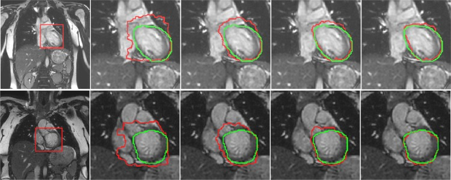
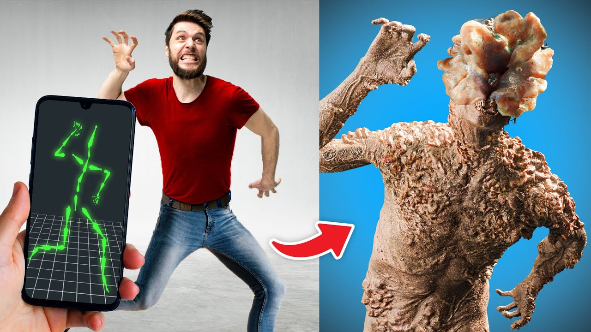
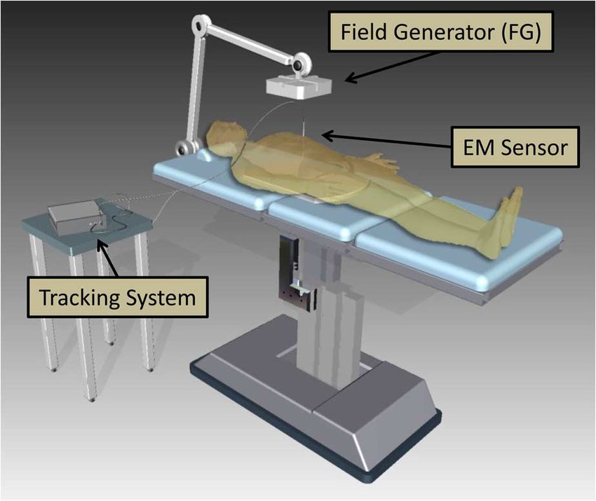
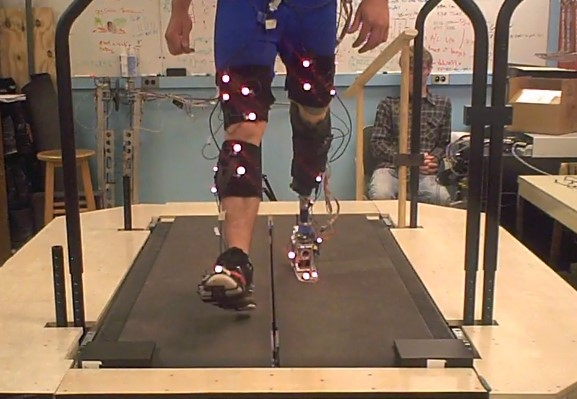
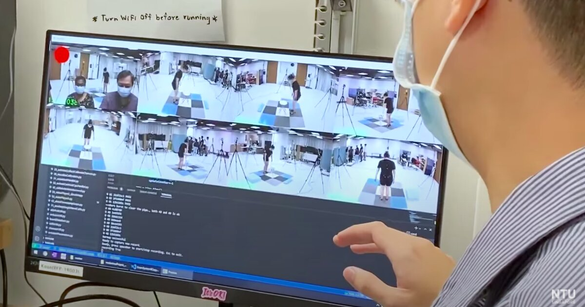

In medical procedures such as radiation therapy or surgical interventions, precise targeting of affected areas is paramount. Motion tracking enables real-time adjustments to compensate for patient movement, ensuring that therapeutic doses are accurately delivered to the intended location. This precision minimizes collateral damage to healthy tissues and maximizes therapeutic efficacy, thereby improving patient outcomes.
Home
Welcome to the Home page!
Motion Tracking of Daily Living and Physical Activities in Health Care: Systematic Review From Designers’ Perspective

Motion tracking in daily living
A deep Boltzmann machine-driven level set method for heart motion tracking using cine MRI images
Motion tracking in medical field
An Effective Motion-Tracking Scheme for Machine-Learning Applications
Motion tracking.

Username
3
Posts
100
Followers
50
Following

Motion tracking ensures precise monitoring of patient movements during rehabilitation, enhancing therapy outcomes by providing real-time feedback and optimizing recovery strategies.

Motion tracking enables objective assessment of physical therapy progress through quantitative data on joint mobility, muscle activation, and movement quality, aiding clinicians in tailored treatment planning and adjustment.

Motion tracking supports biomechanical research by analyzing movement patterns under various conditions, contributing to advancements in surgical techniques, prosthetic design, and evidence-based practices for musculoskeletal disorders.